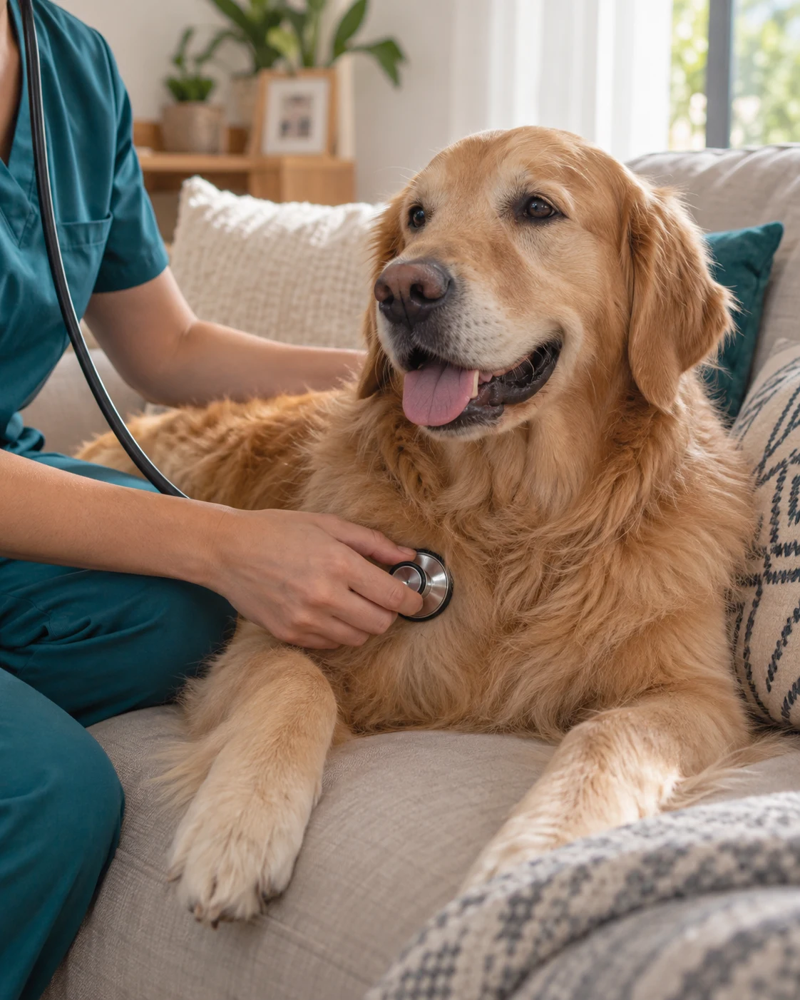
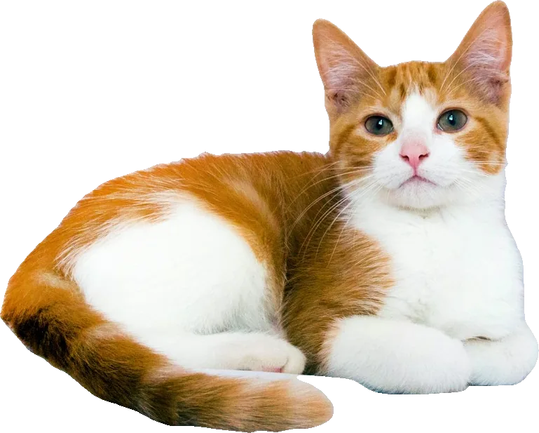
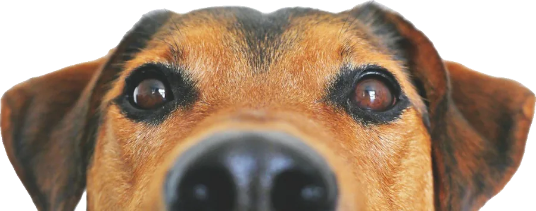

Su bienestar,
sin salir
de casa.
Veterinario a domicilio en Santo Domingo
Atención clínica para perros y gatos en la tranquilidad de su hogar. Sin el estrés del traslado y con el cuidado que merecen.
Agendar por WhatsApp →


empieza en casa.
Menos traslados.
Más tranquilidad.
Su hogar también puede ser el lugar para cuidar su salud. Recibe atención clínica para tu perro o gato sin cambiar su entorno.
- Atención en un espacio familiar
- Una visita coordinada contigo
- Cobertura en todo Santo Domingo
Atención completa,
en su propio espacio.
Medicina preventiva y consulta de primer nivel para perros y gatos. Llevo el equipo, examino con calma y te dejo todo por escrito.
SERVICIO PRINCIPALConsulta clínica a domicilio

Una revisión completa de pies a cabeza, con calma y en su espacio. Al terminar te explico lo que encontré y te dejo el registro escrito.
Qué reviso
- Temperatura, frecuencia cardíaca y respiratoria
- Mucosas, hidratación y tiempo de llenado capilar
- Auscultación de corazón y pulmones
- Ojos, oídos, boca y dientes
- Piel, pelaje y ganglios
- Palpación abdominal, peso y condición corporal
Cuándo pedir una consulta
- No come o está decaído por más de 24 horas
- Vómitos o diarrea que se repiten
- Tos, estornudos o secreciones en ojos o nariz
- Cojea, se rasca mucho o pierde pelo
- Toma más agua u orina más de lo normal
- Su chequeo anual, aunque se vea sano
¿Es una emergencia? Si tu mascota tiene dificultad para respirar, convulsiones, sangrado abundante o fue atropellada, llévala de inmediato a una clínica con atención de emergencia.
Vacunación

Llevo las vacunas en cadena de frío y dejo el carné llenado y sellado en cada dosis. Estas son las dudas más comunes:
Perros
¿Desde qué edad se vacuna un cachorro?
Desde las 6 a 8 semanas. Se aplican varias dosis cada 3 a 4 semanas hasta las 16 semanas, porque los anticuerpos de la madre pueden bloquear las primeras.
¿Qué vacunas necesita?
La quíntuple o séxtuple (moquillo, parvovirus, hepatitis, parainfluenza y leptospirosis, según la marca) y la antirrábica, que es obligatoria.
¿Cada cuánto se refuerza?
Un refuerzo al año de completar el esquema de cachorro, y luego según el calendario que dejo anotado en su carné.
Gatos
¿Qué vacunas necesita mi gato?
La triple felina (panleucopenia, rinotraqueítis y calicivirus) y la antirrábica. Si sale a la calle o vive con otros gatos, también evaluamos la de leucemia felina, previa prueba.
Si nunca sale de casa, ¿igual se vacuna?
Sí. Los virus pueden entrar en la ropa y los zapatos, y la antirrábica es obligatoria también para gatos.
¿Desde qué edad?
Desde las 8 semanas, con refuerzos cada 3 a 4 semanas hasta las 16 semanas.
¿Es normal que esté decaído después? Puede estar cansado o con molestia en la zona de la inyección durante 24 a 48 horas. Si notas hinchazón en la cara, vómitos o dificultad para respirar, escríbeme de inmediato.
Desparasitación interna y externa

Calculo la dosis con el peso real en báscula, no por la talla, y elijo el producto según la especie, la edad y el estilo de vida de tu mascota.
Interna
¿Contra qué protege?
Parásitos intestinales como áscaris, anquilostomas, tricuros y tenias. Algunos pueden contagiarse a las personas, sobre todo a los niños.
¿Con qué?
Antiparasitarios de amplio espectro como praziquantel, pirantel, febendazol o milbemicina oxima, solos o combinados, en tableta o suspensión.
¿Cada cuánto?
Cachorros y gatitos: cada 2 semanas desde las 2 a 3 semanas de vida hasta el destete, y luego cada mes hasta los 6 meses. Adultos: al menos cada 3 meses.
Externa
¿Contra qué protege?
Pulgas, garrapatas y ácaros. Las garrapatas transmiten enfermedades como la ehrlichiosis y la anaplasmosis, frecuentes en zonas cálidas como Santo Domingo.
¿Con qué?
Isoxazolinas (fluralaner, afoxolaner, sarolaner o lotilaner) en tableta masticable o pipeta, que protegen de 1 a 3 meses según el producto. También pipetas con selamectina o fipronil.
¿Cada cuánto?
Todo el año, según la duración del producto: con el clima cálido y húmedo, pulgas y garrapatas se reproducen en cualquier mes.
Importante en gatos: nunca uses en un gato un antipulgas para perros. Muchos contienen permetrina, que es tóxica para los gatos.
Toma de muestras y exámenes

Tomo las muestras en casa, las envío al laboratorio y te explico los resultados en lenguaje claro, no solo el papel con números.
Qué puedo tomar
- Hemograma y bioquímica sanguínea (función de hígado y riñón)
- Examen de orina
- Coproparasitario (heces)
- Raspado de piel y citología de oído
- Pruebas rápidas: parvovirus, moquillo, Ehrlichia y Anaplasma en perros; leucemia (FeLV) e inmunodeficiencia felina (FIV) en gatos
Cómo prepararlo
¿Necesita ayuno?
Para la bioquímica sanguínea, de 8 a 12 horas sin comer. El agua no se retira.
¿Y la muestra de heces?
Que sea fresca, del mismo día, en un frasco limpio. Si puedes, guárdala en refrigeración hasta la visita.
¿Cuándo tengo los resultados?
Depende del examen y del laboratorio. Las pruebas rápidas se leen en minutos durante la visita.
Control de pacientes crónicos

Visitas periódicas para pacientes que necesitan seguimiento, sin el estrés de llevarlos a la clínica cada vez.
A quién está dirigido
- Perros mayores de 7 años y gatos mayores de 10
- Enfermedad renal crónica
- Cardiopatías
- Diabetes
- Problemas de tiroides
- Artrosis y dolor crónico
Qué incluye cada control
- Examen físico y registro de peso visita a visita
- Revisión de la medicación y ajuste de dosis
- Exámenes de control cuando corresponden
- Señales de alerta para vigilar en casa
- Registro escrito para llevar su historial
¿Cada cuánto? Depende de la enfermedad y de cómo responde al tratamiento: al inicio puede ser cada pocas semanas y, cuando está estable, cada 3 a 6 meses.
Planes de salud preventiva

Un calendario hecho a la medida de tu mascota, con las fechas anotadas en su carné para que no se te pase ninguna.
Cachorros y gatitos
- Esquema completo de vacunas
- Desparasitaciones frecuentes hasta los 6 meses
- Primer examen completo
- Orientación sobre alimentación, socialización y esterilización
Adultos y mayores
- Refuerzo anual de vacunas
- Desparasitación interna cada 3 meses y externa todo el año
- Chequeo anual; cada 6 meses en mayores
- Control de peso, dientes y articulaciones
Cada visita se cotiza por WhatsApp según el servicio. Te confirmo el valor total, incluida medicación e insumos de laboratorio si hacen falta, antes de agendar y no después de atender.
Mv. Daniel Mendoza
Trabajo sobre todo en medicina preventiva y consulta de primer nivel: el chequeo que evita que un problema pequeño se vuelva una urgencia cara.
Atiendo a domicilio porque muchos gatos y perros llegan a la clínica estresados por el traslado, y el estrés altera su frecuencia cardíaca, su respiración y su temperatura. En su propio espacio están más tranquilos, se dejan revisar con calma y el examen refleja mejor su verdadero estado de salud.

- Consulta sin traslado ni sala de espera
- Registro clínico escrito en cada visita
- Dosis calculadas por peso real
- Valor confirmado antes de agendar

El primer paso
es un mensaje.
Cuéntame qué necesita tu mascota y en qué sector estás. Coordinemos el día y la hora de la visita por WhatsApp.
Me escribes por WhatsApp
Cuéntame qué necesita tu mascota, su edad y peso aproximado, y en qué sector estás.
096 014 7702Lunes a sábado · 08:00 – 18:00
Agendar mi visita →Coordinamos día y hora
Atiendo con cita previa. Te confirmo el valor de la visita antes de ir, y queda agendada.
Atiendo en tu hogar
Llevo mi equipo. Al terminar te dejo el registro clínico y el plan de seguimiento por escrito.